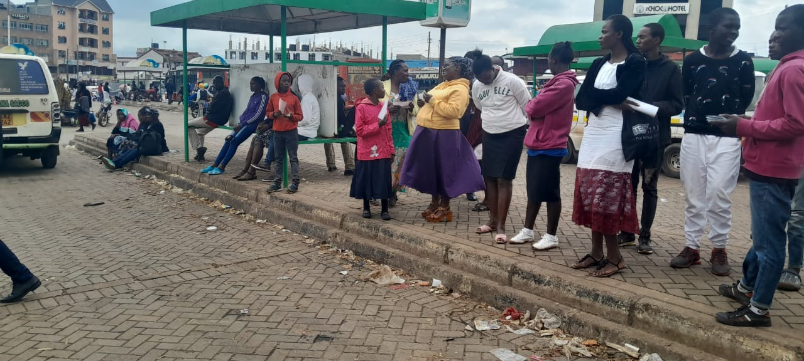
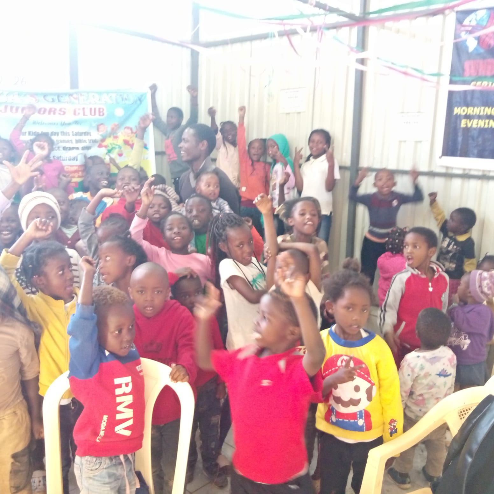
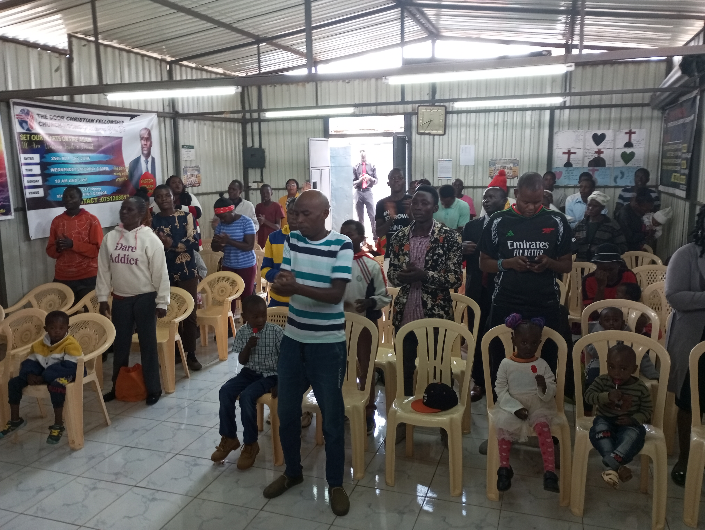
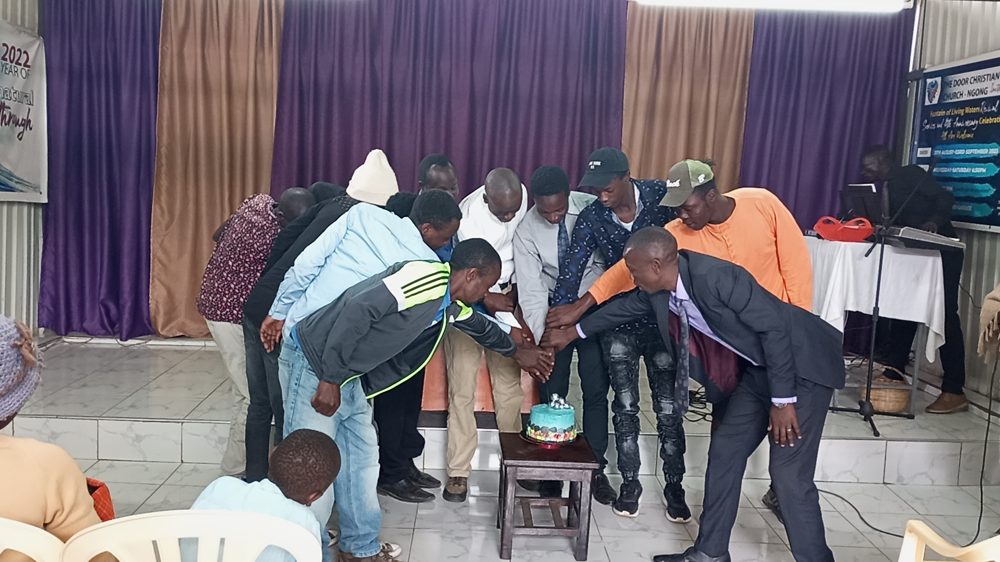

Join Our Vibrant Ministries
At The Door Christian Fellowship Church, we believe every member has a unique role to play in God's kingdom. Our diverse ministries provide opportunities for everyone to serve, grow, and make a difference.

Youth Ministry
Empowering young people aged 13-25 to discover their purpose and grow in faith through worship, fellowship, and mentorship.
- Weekly Youth Services
- Leadership Development
- Music & Arts Programs
- Youth Camps & Retreats
Meets: Every Friday @ 6:00 PM

Children's Ministry
Nurturing young hearts with God's love through age-appropriate teaching, fun activities, and creative biblical learning.
- Sunday School Programs
- Bible Stories & Crafts
- Holiday Programs
- Children's Choir
Meets: Sundays @ 10:00 AM

Women's Ministry
Empowering women through fellowship, prayer, and spiritual growth in a supportive community.
- Bible Study Groups
- Prayer Partnerships
- Community Outreach
- Annual Women's Conference
Meets: Every Saturday @ 3:00 PM

Men's Ministry
Building strong Christian men through fellowship, accountability, and spiritual leadership development.
- Men's Fellowship
- Leadership Training
- Community Service
- Sports & Recreation
Meets: Every Saturday @ 7:00 AM
Special Ministries
Worship Ministry
Join our worship team in leading the congregation in praise and worship through music, dance, and arts.
Learn More →Prayer Ministry
Dedicated to intercession and spiritual warfare, supporting the church's vision through prayer.
Learn More →Community Outreach
Reaching out to our community through various programs and humanitarian initiatives.
Learn More →Get Involved
Ready to make a difference? Join one of our ministry teams today!